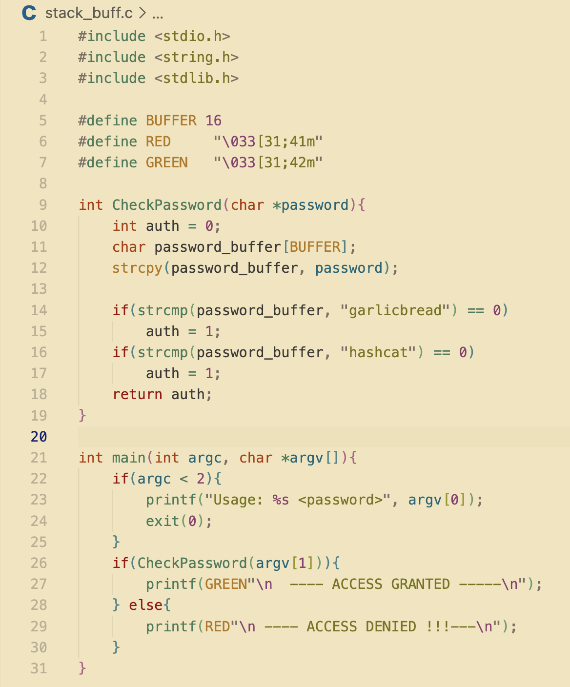
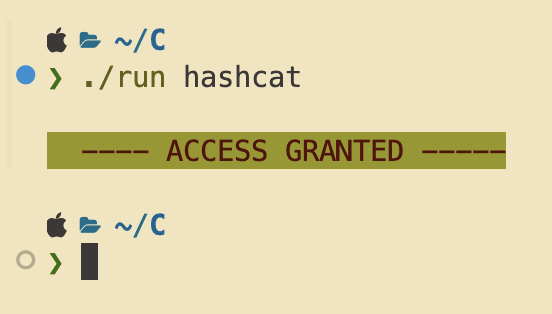
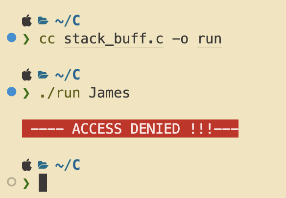
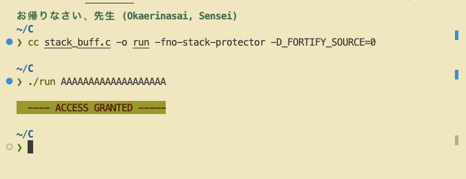
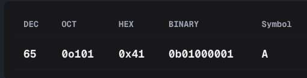

The Stack Buffer Overflow
I was going through some common C vulnerabilities and this one stopped me. The stack buffer overflow.
If you're reading this I'm assuming you know what the stack is. If not, quick check up in the link below
The Stack is a region where data is added and removed in LIFO order (Last In First Out). It stores local variables, function call info, return addresses, basically the short-term memory of the program. More here → Stack info
So I wrote a small password checker in C to show how this works. Two valid passwords, denies everything else.
| Snippet | Positive OUT | Negative OUT |
|---|---|---|
 |
 |
 |
The Problem
This one line
Everything about this program is fine except line 12:
strcpy(password_buffer, password);strcpy copies whatever string you hand it into password_buffer. That buffer is 16 bytes wide. strcpy doesn't know that, doesn't check that, doesn't care; it copies until it hits a \0 and stops. That's it.
So if your input is 30 characters, it writes 30 bytes into a 16-byte slot. The other 14 go somewhere. That somewhere is the whole problem.
Memory Layout
What's sitting next to that buffer
Inside CheckPassword, the stack frame looks roughly like this:
auth sits right above password_buffer in memory. Starts at 0 ; denied by default. The only thing supposed to flip it is a correct password match.
But strcpy writes forward through memory. Byte 0, 1, 2... 15, 16, 17 >>> it doesn't stop at the boundary. Once you're past byte 15 you're writing straight into auth.
The Exploit
Getting in without the password
Send anything longer than 16 characters. The overflow bytes land in auth. ASCII characters are all non-zero, so auth goes non-zero, CheckPassword returns true, and you're in.


19 A's. Three bytes past the boundary. Each A is 0x41, so auth ends up as 0x00414141. Not zero. Granted.
---- ACCESS GRANTED ------
~/C ❯ ./run James
---- ACCESS DENIED !!!----
~/C ❯ ./run AAAAAAAAAAAAAAAAAAA
---- ACCESS GRANTED ------ ← wrong password, shouldn't be here
The password logic isn't broken. The check itself is fine. The bug has nothing to do with any of that; it's just about where variables sit in memory and what strcpy does when you feed it too much.
On macOS
Getting a trace trap instead?
If you try this on macOS and hit Trace/BPT trap: 5 instead of access granted ; that's the stack protector catching the overflow. Apple compiles with -fstack-protector and a hardened strcpy by default. The overflow still happens, the OS just kills the process before anything can come of it.
To see it actually work, strip the protections at compile time:
cc stack_buff.c -o run -fno-stack-protector -D_FORTIFY_SOURCE=0
The Fix
One swap
// before
strcpy(password_buffer, password);
// after
strncpy(password_buffer, password, BUFFER - 1);
password_buffer[BUFFER - 1] = '\0';strncpy takes a max length. 19 A's come in, 15 get copied, the rest get dropped. auth never gets touched. If you're on macOS you can use strlcpy instead — same idea, handles the null terminator automatically.